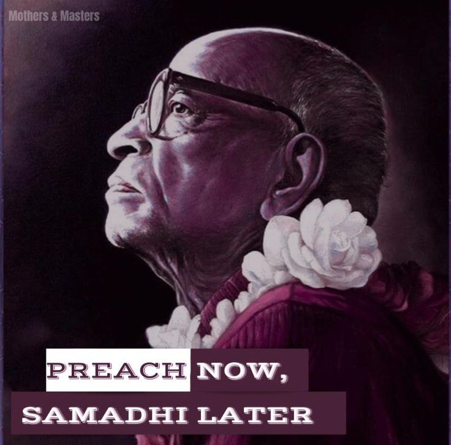

"'Preach now, Varṇāśrama-dharma Now'"
Posted on : 31st May, 2025

We are not advocating to stop preaching. But as long as we are not serious about instituting Varṇāśrama-dharma, we will continue to experience the same problems that prompted Śrīla Prabhupāda to emphasize it. I In other words, the syndrome will continue - that from our preaching, people will take up Kṛṣṇa consciousness but will then either leave or regress to a very low level. Especially as this organization grows, we must consider how to teach newcomers to conduct their life in Kṛṣṇa consciousness. We must establish norms of behaviour suitable for Vaiṣṇavas and should be clear as to what our various roles are.
The need to demonstrate traditional Vedic Culture as a better way of life is an intrinsic aspect of Śrīla Prabhupāda's vision. He famously said "Preach now, samādhi later" and indirectly repeatedly said "Preach now, Varṇāśrama-dharma now." That is his order, and we should try to implement it.
~ Mothers & Masters : "Preach now, Varṇāśrama-dharma Now."
Jay Śrīla Prabhupāda!